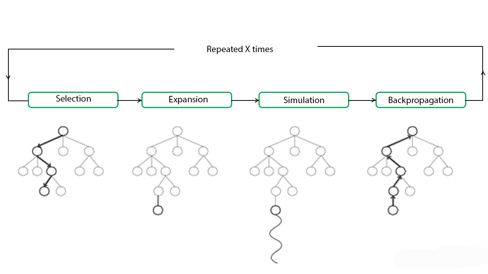

This App is an implementation of Othello (Reversi) game. It offers 3 different modes of play (Single, Local Multiplayer, Online). This article will focus on the Single Player mode with the “AI” behind the computer play - Monte Carlo Tree Search.
Reversi is a strategy board game for two players, played on an 8×8 uncheckered board. It was invented in 1883. There are sixty-four identical game pieces called disks, which are light on one side and dark on the other. For the specific game of Othello, the game begins with four disks placed in a square in the middle of the grid, two facing light-side-up, two dark-side-up, so that the same-colored disks are on a diagonal. Players take turns placing disks on the board with their assigned color facing up. During a play, any disks of the opponent's color that are in a straight line and bounded by the disk just placed and another disk of the current player's color are turned over to the current player's color. The objective of the game is to have the majority of disks turned to display one's color when the last playable empty square is filled.
In computer science, Monte Carlo tree search (MCTS) is a heuristic search algorithm for some kinds of decision processes, most notably those employed in software that plays board games. In that context MCTS is used to solve the game tree. The focus of MCTS is on the analysis of the most promising moves, expanding the search tree based on random sampling of the search space. The application of Monte Carlo tree search in games is based on many playouts, also called roll-outs. In each playout, the game is played out to the very end by selecting moves at random. The final game result of each playout is then used to weight the nodes in the game tree so that better nodes are more likely to be chosen in future playouts. The most basic way to use playouts is to apply the same number of playouts after each legal move of the current player, then choose the move which led to the most victories. The efficiency of this method—called Pure Monte Carlo Game Search—often increases with time as more playouts are assigned to the moves that have frequently resulted in the current player's victory according to previous playouts.
The main difficulty in selecting child nodes is maintaining some balance between the exploitation of deep variants after moves with high average win rate and the exploration of moves with few simulations. The first formula for balancing exploitation and exploration in games, called UCT (Upper Confidence Bound 1 applied to trees), was introduced by Levente Kocsis and Csaba Szepesvári.
Each round of Monte Carlo tree search consists of four steps:
The above steps can be visually understood by the diagram given below:
Essentially, MCTS uses Monte Carlo simulation to accumulate value estimates to guide towards highly rewarding trajectories in the search tree. In other words, MCTS pays more attention to nodes that are more promising, so it avoids having to brute force all possibilities which is impractical to do.
Advantages of Monte Carlo Tree Search:
Disadvantages of Monte Carlo Tree Search:
This App is mostly written in JavaScript. No specific game domain knowledge has been applied in the algorithm in order to show the effective-ness in a pure Monte Carlo Tree Search. Allowed Time is the only variable in the MCTS process to specify the time allowed for search to run. In order to increase the effective-ness in every MCTS run, previous node/tree results has been processed and re-used. Web-worker is used in order to seperate threads on MCTS from the main thread to improve speed of calculation and user experience.
Online Multiplayer is implimented with the help of RealTime Database provided by Firebase. No specific login detail is required during online multiplayer session
Below is the Github repository for reference:
https://github.com/ronald-hk-chung/reversi